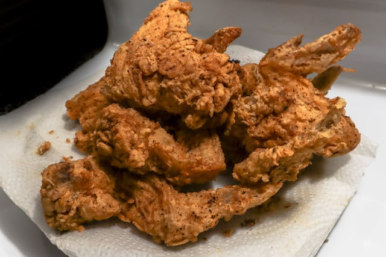

Home
Fried Chicken

Juicy and crispy triple dipped fried chicken.
- 1 quart vegetable oil for frying
- 4 1/2 cups all-purpose flour, divided
- 1 1/2 tablespoons garlic salt
- 1 tablespoon ground black pepper
- 1 tablespoon paprika
- 1/2 teaspoon poultry seasoning
- 1 1/2 cups beer, or as needed
- 2 egg yolks, beaten
- 1 teaspoon salt
- 1/4 teaspoon ground black pepper
- 1 (3 pound) whole chicken, cut into pieces
- Heat oil in a deep fryer to 350°F (175°C). Mix 3 cups flour, garlic salt, 1 tablespoon pepper, paprika, and poultry seasoning together in a medium bowl.
- Stir 1 1/2 cups beer, remaining 1 1/3 cups flour, egg yolks, salt, and 1/4 teaspoon pepper together in a separate bowl; thin with more beer if batter is too thick.
- Moisten chicken pieces with a little water, then dip in seasoned flour mixture. Shake off excess and dip in beer batter, then dip in the seasoned flour mixture once more.
- Lower chicken pieces carefully into the hot oil in batches. Fry until crispy and well-browned, about 15 to 18 minutes. An instant-read thermometer inserted near the bone should read 165°F (74°C).
- Transfer to a paper towel-lined plate to drain. Enjoy!